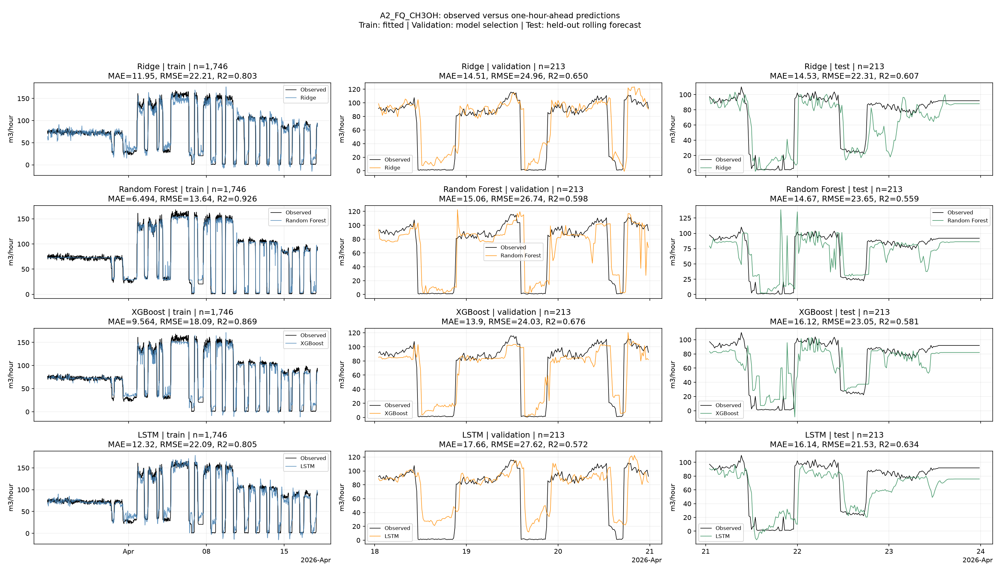
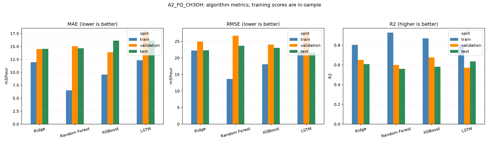

Train labels before 2026-04-18; validation labels before 2026-04-21; test origins from 2026-04-21. The split figure shows only the final seven days; training still uses all available earlier history. Test metrics never select models. R2 is undefined for constant labels. Recorded flows are predicted; this is not an operating recommendation.
| model | target | unit | algorithm | split | n | MAE | RMSE | R2 | constant_target |
|---|---|---|---|---|---|---|---|---|---|
| a2_ch3oh_flow | A2_FQ_CH3OH | m3/hour | Ridge | train | 1746 | 11.947888 | 22.205214 | 0.803279 | False |
| a2_ch3oh_flow | A2_FQ_CH3OH | m3/hour | Ridge | validation | 213 | 14.513379 | 24.963443 | 0.650024 | False |
| a2_ch3oh_flow | A2_FQ_CH3OH | m3/hour | Ridge | test | 213 | 14.527613 | 22.313058 | 0.607324 | False |
| a2_ch3oh_flow | A2_FQ_CH3OH | m3/hour | Random Forest | train | 1746 | 6.494119 | 13.644509 | 0.925723 | False |
| a2_ch3oh_flow | A2_FQ_CH3OH | m3/hour | Random Forest | validation | 213 | 15.064130 | 26.738332 | 0.598489 | False |
| a2_ch3oh_flow | A2_FQ_CH3OH | m3/hour | Random Forest | test | 213 | 14.666775 | 23.654645 | 0.558685 | False |
| a2_ch3oh_flow | A2_FQ_CH3OH | m3/hour | XGBoost | train | 1746 | 9.564406 | 18.093498 | 0.869387 | False |
| a2_ch3oh_flow | A2_FQ_CH3OH | m3/hour | XGBoost | validation | 213 | 13.898714 | 24.027139 | 0.675785 | False |
| a2_ch3oh_flow | A2_FQ_CH3OH | m3/hour | XGBoost | test | 213 | 16.124259 | 23.050518 | 0.580939 | False |
| a2_ch3oh_flow | A2_FQ_CH3OH | m3/hour | LSTM | train | 1746 | 12.323985 | 22.087748 | 0.805355 | False |
| a2_ch3oh_flow | A2_FQ_CH3OH | m3/hour | LSTM | validation | 213 | 17.661742 | 27.618783 | 0.571611 | False |
| a2_ch3oh_flow | A2_FQ_CH3OH | m3/hour | LSTM | test | 213 | 16.136361 | 21.531232 | 0.634360 | False |


